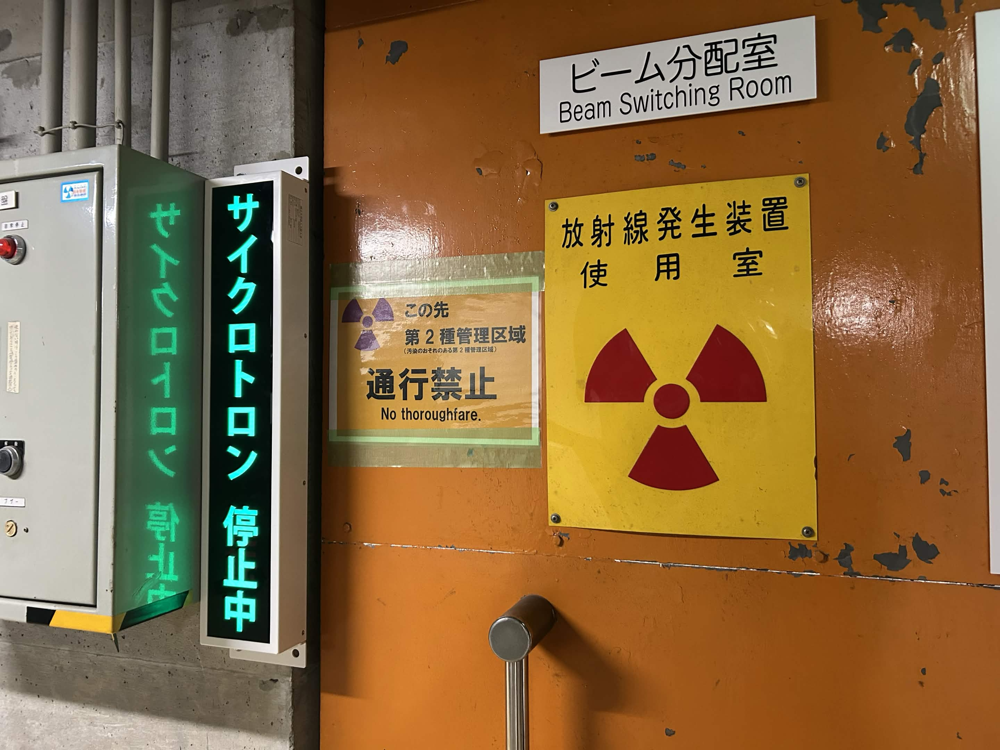

サイト内に階層構造を作る練習としてとりあえず日記を実装してみた。index → diary-top → 2026index → ここという流れを作れるようになった。htmlを触るのは初めてだけどAIに聞きながら色々いじってるだけで一日でここまでできるようになってしまった。本当に便利な時代だ......
折角自由に自分語りできる場を設けたことだし適当に思いついたことをつらつら書き連ねてみようと思う。「17族第8周期」というサークル名だが、何故こんな名前なのかというとハロゲンが好きで、かつ重い元素が大好きだからだ。やっぱり超重元素って浪漫だと思う。既知の化学の崩壊、終着点、核図表の最果ての地を思うと陶酔してしまう。核物理学なんも知らんけど.......17族第8周期(171番)の元素が実際に合成される日が来るのかは分からないけど、そういう最果てへの憧憬と畏怖を込めた名前だ。まあ単になんとなくかっこよくて語呂が良いから付けたってだけではある。
今後のサイトの運営方針だが、こんな感じで気が向いたときに適当な文章を書き連ねてみたり、旅の記録や元素検定(2級は取得済み、そのうち1級を受けるつもり)などを受けたときの受験レポなんかを書いてみるblogとしても運用していきたいと考えている。一人旅が大好きなので今後そういう内容が増えるかもしれない。態々こんなサイトのこんな記事まで辿り着く人間はよっぽどな物好きか雨露に興味のある人間に限られると思うので、遠慮なく下らない話やどうでもいい自己開示をしていけたらいいなと思っている。
今はVSCodeで打ち込んだhtmlファイルをGithub Pagesで公開するという方式だけどそのうちレンタルサーバーを借りることになるのかなあ......
(以下、画像と音声の埋め込みのテスト)
